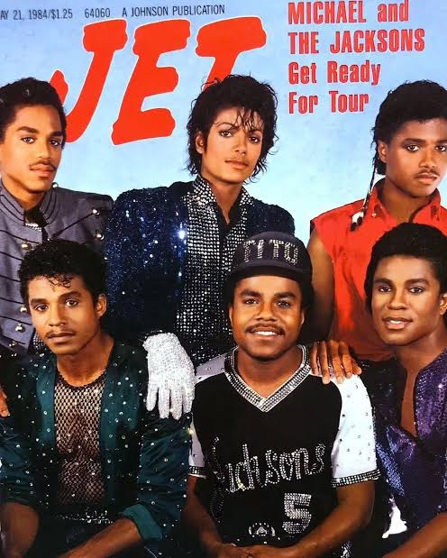

La obra de Michael Jackson se divide en tres grandes grupos. El primero son los álbumes con los Jackson 5 y luego con los Jacksons. El segundo son sus discos como solista, que empezó a grabar mientras seguía en el grupo. El tercero son los lanzamientos póstumos. Su etapa solista se divide en dos sellos. Con Motown publicó cuatro álbumes: Got to Be There (1971), Ben (1972), Music and Me (1973) y Forever, Michael (1975), el último con esa compañía [3]. Del segundo salió su primer número uno como solista, con la canción del mismo nombre [3], y «Rockin' Robin» llegó al segundo lugar de las listas [1][2]. Con Epic Records, a partir de 1979, publicó los discos que lo hicieron mundialmente famoso: Off the Wall (1979), Thriller (1982), Bad (1987), Dangerous (1991), HIStory (1995), Blood on the Dance Floor: HIStory in the Mix (1997) e Invincible (2001), su último álbum de estudio [1][2][3]. Después de su muerte se publicaron Michael (2010) y Xscape (2014) [3]. Paralelamente grabó con sus hermanos. Destiny (1978) mostró que los Jacksons podían componer sus propias canciones [3]. Triumph (1980) vendió más de un millón de copias y se acompañó de una extensa gira [3]. Victory (1984) trajo «State of Shock», un dueto con Mick Jagger que fue su sencillo más exitoso [3].
Fue su primer disco para Epic y el primero producido por Quincy Jones [3]. Es una mezcla de pop y funk que incluye «Don't Stop 'Til You Get Enough», con la que ganó su primer Grammy, además de «Rock with You», «She's Out of My Life» y la canción que da título al álbum [3]. Britannica señala que esos sencillos mostraron su estilo enérgico y aprovecharon el auge de la música disco [1]. La crítica sintió que el álbum lo alejaba del pop de su juventud hacia un sonido más complejo, y algunos lo consideran uno de los mejores discos de pop jamás hechos [3].
Fue coproducido por Quincy Jones y el propio Jackson [4], y reunió varios invitados especiales [1]. Sus siete canciones dentro del Top 10 fueron «Thriller», «Billie Jean», «Beat It», «Human Nature», «Wanna Be Startin' Somethin'», «P.Y.T. (Pretty Young Thing)» y «The Girl Is Mine» [3]. Esta última es un dueto relajado con Paul McCartney que llegó al primer lugar de las listas de R&B y al segundo del pop [1]. «Billie Jean» fue un tema de baile que encabezó las listas de pop [1], y «Beat It» mostró su lado más rockero, con un solo de guitarra de Eddie Van Halen [1].

Llegó cinco años después de Thriller [3]. Las cinco canciones que alcanzaron el primer lugar fueron «I Just Can't Stop Loving You», «Bad», «The Way You Make Me Feel», «Man in the Mirror» y «Dirty Diana» [3]. Incluye también «Leave Me Alone», una respuesta a los rumores de la prensa sobre su vida privada [1]. El video de la canción «Bad» lo dirigió Martin Scorsese y contó una historia de adolescentes y pandillas con un joven Wesley Snipes, entonces desconocido [3].

Fue su octavo álbum como solista y el primero sin Quincy Jones [3]. Gran parte fue producida por Teddy Riley, figura del estilo conocido como New Jack Swing [1]. Mezcla géneros muy distintos: R&B, funk, gospel, hip-hop, rock, música industrial y clásica [3]. Su sencillo más conocido fue «Black or White», con un video dirigido por John Landis. Los últimos minutos de ese video, con gestos sexuales y destrozo de autos y edificios, generaron críticas; Jackson pidió disculpas y los eliminó [3].

Es un álbum doble: un disco con sus éxitos anteriores y otro con material nuevo, con 15 canciones de cada tipo [2][3]. Incluye colaboraciones con Janet Jackson, The Notorious B.I.G., Shaquille O'Neal y Slash [3]. De él salieron «You Are Not Alone», un número uno , y «Scream», a dúo con su hermana Janet [1][3]. Biography.com lo describe como su disco más personal, con letras sobre sus acusaciones y su enojo con el trato de los medios. También recuerda que la canción «They Don't Care About Us» recibió críticas por usar un término considerado antisemita [3].

Fue su último álbum de estudio. Debutó en el primer lugar, pero se mantuvo en las listas mucho menos que sus discos anteriores [1]. Abordó temas como el aislamiento, los problemas sociales y su rechazo a la prensa [3]; recibió críticas mixtas [3].

Michael (diciembre de 2010) salió envuelto en una polémica sobre si Jackson había cantado realmente algunas de las pistas, algo que su herencia negó [3]. Xscape (2014) incluyó «Love Never Felt So Good», con Usher [3]. Esa canción llegó al noveno lugar de la lista Billboard Hot 100 el 21 de mayo de 2014 y lo convirtió en el primer artista con un éxito del Top 10 en cinco décadas distintas [4].
También trabajó con directores de cine en sus videos: John Landis («Thriller» y «Black or White») y Martin Scorsese («Bad») [3].
Britannica incluye las giras entre los campos que Jackson revolucionó [1]. En 1984 volvió a los escenarios con sus hermanos en la gira Victory, por Estados Unidos y Canadá [2], uno de los eventos de conciertos más populares de ese año [1].
Su primera gran gira como solista fue la de Bad, que lo mantuvo más de un año de concierto en concierto [3]. Su momento más famoso fue en Londres, en 1988. Jackson tocó siete noches con entradas agotadas en el estadio de Wembley, con 504.000 asistentes en total, lo que fue récord Guinness en su momento. Todas las entradas se vendieron en taquilla física, con filas de más de una milla alrededor del estadio [5]. En 1992 y 1993 realizó la gira Dangerous, con 69 conciertos para casi 4 millones de personas. Su objetivo era recaudar 100 millones de dólares para ayudar a niños y al medio ambiente [7]. En 1993 participó también en el espectáculo de medio tiempo del Super Bowl XXVII [3].
Su último proyecto en vivo fue This Is It, una serie de 50 conciertos en el O2 Arena de Londres. Las entradas de las 50 fechas se agotaron en pocas horas y se vendieron más de un millón [6]. La serie nunca se realizó porque Jackson murió antes de que empezara [1]. De los ensayos quedó el documental This Is It, estrenado en octubre de 2009 [1].
.
.
.
.